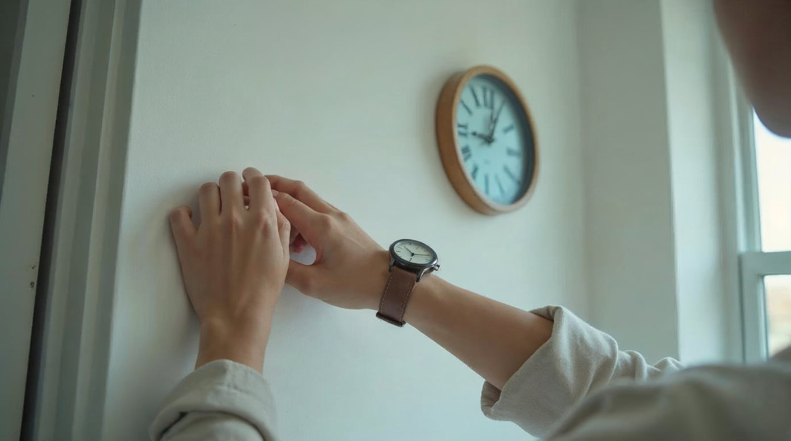
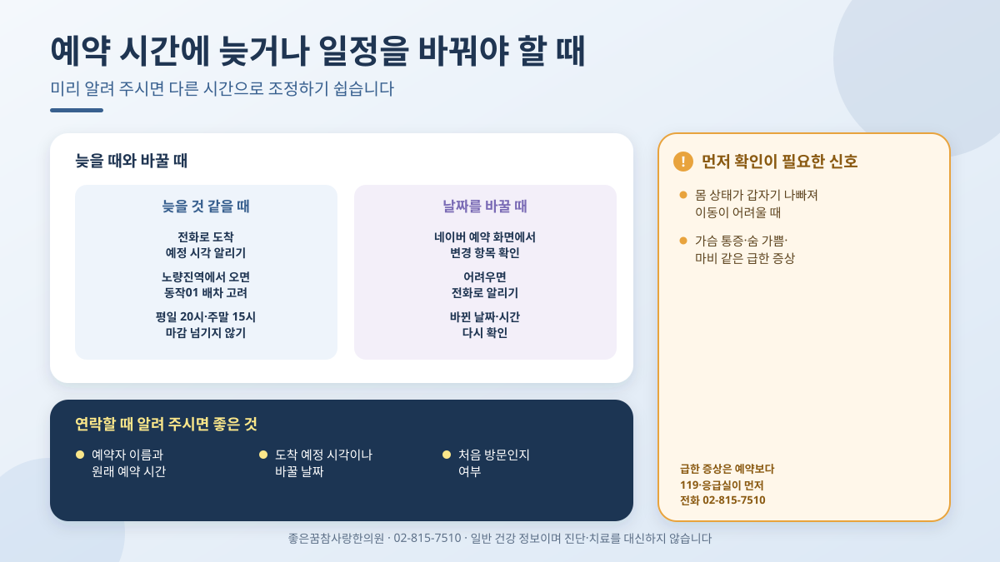

이종호 한의사 감수좋은꿈참사랑한의원 대표원장 (한의사 면허번호 19769)발행 2026-11-23 · 수정 2026-11-26
이 글의 차례
- 왜 미리 알려 주시면 좋을까요
- 일상에서 먼저 해 볼 수 있는 것
- 늦을 것 같을 때
- 왜 늦었을 때 뛰어오지 마시라고 할까요
- 얼마나 늦으면 날짜를 바꾸는 것이 좋을까요?
- 날씨와 교통 때문에 늦어지기 쉬운 날
- 아이나 부모님 일정 때문에 바꿔야 할 때
- 일정을 바꾸거나 취소할 때
- 연락이 늦어져도 미안해하지 않으셔도 됩니다
- 방문 간격이 자꾸 벌어지면 어떻게 될까요?
- 치료가 잘 맞는지 궁금해서 예약을 미루고 계신가요?
- 일정이 자주 바뀌는 분을 위한 요령
- 몸이 너무 힘들어 못 가겠다는 날에는
- 진료를 쉬는 동안 집에서 이어 갈 것
- 다시 오시는 날에는 무엇을 말씀해 주시면 좋을까요?
- 예약을 잊지 않으려면 어떻게 할까요?
- 처음 예약할 때부터 여유를 두려면
- 진료 뒤에 다른 일정이 있다면
- 예약보다 일찍 도착했다면
- 이럴 때는 미리 일정을 다시 생각해 보세요
- 한의원에서 함께 살필 수 있는 경우
- 연락하실 때 알려 주시면 좋은 것
- 이런 증상은 먼저 확인이 필요합니다
늦거나 일정을 바꿔야 할 때는 알게 된 즉시 전화나 네이버 예약으로 알려 주시면 됩니다. 대중교통이 막히거나 갑자기 일이 생겨 예약 시간을 지키기 어려운 날이 있습니다. 그럴 때 어떻게 하면 되는지 정리합니다.
퇴근 시간이 다 되어 갑자기 회의가 잡힙니다. 겨우 회사를 나섰는데 지하철은 멈춰 서 있고, 휴대폰 시계는 예약 시간을 향해 달려가지요. 마음은 초조하고, 아픈 허리는 더 뻐근하게 느껴집니다. "늦는다고 전화하면 싫어하지 않을까" 하는 걱정까지 겹칩니다.
그런 걱정은 내려놓으셔도 됩니다. 살다 보면 누구나 늦을 수 있고, 일정이 바뀔 수 있습니다. 미리 알려만 주시면 함께 방법을 찾을 수 있습니다.
전화 한 통이면 충분하고, 길게 사정을 설명하지 않으셔도 괜찮습니다. 도착 예정 시각만 알려 주셔도 그날 진료를 어떻게 이어 갈지 정할 수 있습니다. 다시 잡는 날짜도 그 통화에서 함께 정하시면 됩니다. 이 글에는 늦을 때, 일정을 바꿀 때, 그리고 방문 간격이 자꾸 벌어질 때 어떻게 하면 좋은지를 적었습니다.
왜 미리 알려 주시면 좋을까요
- 예약 순서에 맞춰 상담 시간을 나누어 잡기 때문에, 미리 알려 주시면 다른 시간으로 조정하기 쉽습니다.
- 처음 방문이라면 상담 시간이 더 필요해, 늦게 도착하면 충분히 이야기를 나누기 어려울 수 있습니다.
- 주말·공휴일은 오후 3시에 진료가 끝나 늦어지면 당일 진료가 어려울 수 있습니다.
- 많이 늦어지면 그날 상담 시간이 짧아질 수 있어, 날짜를 바꾸는 것이 더 편할 때도 있습니다.
일상에서 먼저 해 볼 수 있는 것
- 예약 전날 날짜·시간과 오는 길을 한 번 더 확인하기
- 휴대폰 알림을 출발 시각에 맞춰 두기
- 처음 오시는 날은 접수와 상담 시간을 생각해 조금 일찍 출발하기

늦을 것 같을 때
- 미리 전화(02-815-7510)로 도착 예정 시각을 알려 주세요.
- 노량진역에서 오신다면 동작 01번 마을버스 배차 간격(평일 약 5분, 주말 약 7분)을 고려해 이동 시간을 잡으세요.
- 진료는 평일 저녁 8시, 토·일·공휴일 오후 3시에 끝납니다. 마감 가까이 도착할 것 같으면 접수 가능 여부를 먼저 전화로 확인하세요.
왜 늦었을 때 뛰어오지 마시라고 할까요
늦었다는 생각에 역에서부터 뛰어오시는 분이 있습니다. 그런데 숨이 턱까지 찬 상태로 진료실에 들어오시면, 맥이 빠르고 몸은 잔뜩 긴장해 있습니다. 이때 짚는 맥은 평소의 몸이 아니라 방금 뛰어온 몸을 보여 줍니다. 그래서 급하게 오신 분은 잠시 쉬었다가 맥을 짚습니다.
통증이 있는 분에게는 더 그렇습니다. 허리나 무릎이 아픈데 서둘러 뛰거나 계단을 급히 오르면, 아픈 곳이 더 긴장하고 다른 곳까지 무리가 갑니다. 상도역에서 오시는 길은 오거리 뒤로 오르막이 있어 더욱 조심해야 합니다.
그러니 늦을 것 같으면 먼저 전화로 알려 주시고, 평소 걸음으로 오세요. 몇 분 늦는 것보다 숨을 고르고 편안하게 들어오시는 것이 진료에 더 도움이 됩니다.
얼마나 늦으면 날짜를 바꾸는 것이 좋을까요?
몇 분이면 괜찮고 몇 분부터는 안 된다고 딱 잘라 말씀드리기는 어렵습니다. 그날 진료 상황과 처음 방문인지에 따라 달라지기 때문입니다. 그래서 늦는다는 것을 알게 된 순간 전화로 도착 예정 시각을 알려 주시면, 그날 오셔도 될지 다른 날로 옮기는 것이 좋을지 함께 정해 드립니다.
처음 오시는 날이라면 조금 더 신중하게 생각해 주세요. 처음 진료는 불편한 곳과 생활을 자세히 여쭙고, 진맥과 필요한 진찰을 거치느라 시간이 걸립니다. 많이 늦어져 이야기를 서둘러야 한다면, 차라리 여유 있는 날로 옮기는 것이 처음 만남을 더 알차게 만듭니다.
날씨와 교통 때문에 늦어지기 쉬운 날
비나 눈이 오는 날, 명절 앞이나 퇴근 시간대에는 길이 평소보다 오래 걸립니다. 버스 배차도 흔들리고 걸음도 느려지지요. 이런 날은 평소보다 15분쯤 일찍 출발하도록 알림을 당겨 두세요.
비 오는 날 서두르다 미끄러지면 원래 불편보다 더 큰 일이 생길 수 있습니다. 늦을 것 같다면 걸음을 재촉하기보다 전화 한 통으로 마음의 짐을 덜어 내세요. 우산과 미끄럽지 않은 신발을 챙기고, 휴대폰은 걸으면서 보지 마시고, 연락은 잠시 멈춰 선 자리에서 해 주세요.
아이나 부모님 일정 때문에 바꿔야 할 때
아이가 갑자기 열이 나거나, 부모님 병원 일정이 겹치는 날이 있습니다. 가족을 돌보는 분은 자기 진료를 가장 먼저 미루곤 하지요. 그 마음을 잘 압니다. 그래도 미룬 진료는 꼭 다시 잡아 주세요. 돌보는 사람의 몸이 버텨야 가족도 돌볼 수 있습니다.
가족과 함께 오시기로 했는데 한 분만 오시게 되었다면 그것도 알려 주세요. 인원이 바뀌면 필요한 시간도 달라집니다. 아이와 부모님을 같은 날 함께 모시고 오시는 것이 편하다면, 그 일정에 맞춰 날짜를 다시 잡으셔도 됩니다.
일정을 바꾸거나 취소할 때
- 네이버 예약으로 하셨다면 예약 화면에서 변경 가능한 항목을 확인하세요.
- 화면에서 바꾸기 어려우면 전화로 알려 주세요.
- 예약 시간 변경이나 취소에 대한 구체적 안내는 방문 전에 한의원에 문의해 확인하세요.
- 예약을 바꾼 뒤에는 바뀐 날짜와 시간을 다시 한 번 확인하기
연락이 늦어져도 미안해하지 않으셔도 됩니다
예약 시간이 지나서야 생각났다며 미안해하시는 분이 있습니다. 아프고 바쁜 와중에 일정을 다 챙기기란 쉽지 않지요. 늦게라도 연락 주시면 다시 시간을 잡으면 됩니다. 연락이 망설여져 그대로 진료를 미루시는 것이 오히려 더 아쉽습니다.
다만 알게 된 순간 바로 알려 주시는 습관은 서로에게 도움이 됩니다. 비어 있게 된 시간이 다른 분께 돌아갈 수 있고, 다시 잡는 날짜도 더 넓게 고르실 수 있습니다.
방문 간격이 자꾸 벌어지면 어떻게 될까요?
진료를 마칠 때 다음 방문 시기를 말씀드리는 데에는 이유가 있습니다. 치료 뒤 몸이 어떻게 반응했는지, 며칠이 지나 어떻게 달라졌는지를 이어서 보아야 다음 치료를 정할 수 있기 때문입니다. 간격이 크게 벌어지면 그사이의 변화를 놓치기 쉽습니다.
예를 들어 일주일 뒤에 다시 보기로 했는데 3주가 지나 오시는 경우, 그동안 좋아졌다가 다시 불편해졌는지, 처음부터 그대로였는지 기억이 흐려지곤 합니다. 그래서 간격이 벌어질 것 같다면 그동안의 변화를 짧게라도 적어 두세요. 그 메모가 빈 시간을 이어 줍니다.
메모는 길 필요가 없습니다. "월 허리 덜함, 수 오래 앉은 뒤 다시 뻐근, 금 잠 설침"처럼 날짜와 한두 단어면 충분합니다. 휴대폰 메모장에 적어 두었다가 진료실에서 보여 주셔도 됩니다.
치료가 잘 맞는지 궁금해서 예약을 미루고 계신가요?
몇 번 다녀 보았는데 뚜렷한 변화가 없는 것 같아 다음 예약을 망설이는 분도 있습니다. 그런 마음이 드신다면 예약을 조용히 미루기보다 진료실에서 솔직하게 말씀해 주세요. 어떤 점이 기대와 달랐는지 들어야 치료 방향을 다시 살필 수 있습니다.
변화가 느린 데에는 여러 이유가 있을 수 있습니다. 잠이나 일하는 자세처럼 생활의 부담이 그대로 이어지고 있을 수도 있고, 방문 간격이 너무 벌어졌을 수도 있습니다. 함께 짚어 보면 무엇을 바꿔 볼지 보입니다.
일정이 자주 바뀌는 분을 위한 요령
교대 근무나 출장이 잦은 분, 아이 일정에 따라 하루가 바뀌는 분은 예약을 지키기가 더 어렵습니다. 그럴 때는 진료를 마칠 때 다음 근무표나 일정을 보며 그 자리에서 날짜를 정해 보세요. 가능한 요일을 몇 개 미리 알려 주시면 그 안에서 맞추기 쉽습니다.
매주 같은 요일, 같은 시간대로 정해 두는 것도 방법입니다. 몸도 일정한 박자를 좋아합니다. 같은 요일에 진료를 받고 같은 요일에 몸 상태를 돌아보면, 한 주 동안의 변화를 비교하기도 쉬워집니다. 고정된 날이 생기면 잊어버릴 일도 줄고, 생활 리듬을 함께 맞추기도 쉬워집니다.
몸이 너무 힘들어 못 가겠다는 날에는
통증이 심해 움직이기조차 힘든 날, 오히려 진료가 더 필요한데 집 밖을 나서기 어려운 모순이 생깁니다. 그럴 때는 무리해서 오시기보다 먼저 전화로 지금 상태를 알려 주세요. 언제부터 어떻게 심해졌는지 들으면 언제 오시면 좋을지 함께 정할 수 있습니다.
가족이 운전해 모셔다 드릴 수 있다면 그것도 방법입니다. 차로 오실 때는 주차 가능 여부를 전화로 먼저 확인해 주세요. 이동이 어려워 날짜를 바꾸셨다면, 그사이 불편이 어떻게 변하는지 적어 두세요.
진료를 쉬는 동안 집에서 이어 갈 것
일정 때문에 한동안 오시지 못하게 되었다면, 진료실에서 말씀드린 생활 요령을 집에서 이어 가 주세요. 저는 잘 먹고, 잘 싸고, 잘 자고, 마음 편하고, 몸 따뜻하게, 이 다섯 가지를 회복의 바탕으로 봅니다. 진료가 잠시 멈춰도 이 바탕은 매일 지킬 수 있습니다.
불편한 곳을 억지로 많이 쓰지 말고, 아픈 동작을 시험하듯 반복하지 마세요. 한약을 드시는 중이라면 처방받은 대로 이어 가시고, 불편한 반응이 있으면 복용을 멈추고 연락해 주세요.
다시 오시는 날에는 무엇을 말씀해 주시면 좋을까요?
예약을 바꾸고 다시 오시는 날에는, 마지막 진료 뒤 어떻게 지내셨는지부터 여쭙습니다. 치료 다음 날 몸이 어땠는지, 그 뒤로 좋아졌다가 다시 불편해진 날이 있었는지, 생활 요령을 해 보셨는지 떠올려 오세요.
간격이 길어졌다고 해서 처음부터 다시 시작하는 것은 아닙니다. 지난 기록을 보며 이어서 살핍니다. 그사이 새로 생긴 불편이나 새로 드시게 된 약이 있다면 꼭 알려 주세요.
예약을 잊지 않으려면 어떻게 할까요?
예약하자마자 휴대폰 달력에 넣고, 전날 저녁과 당일 출발 시각 두 번 알림을 맞춰 두세요. 출발 시각 알림은 이동 시간을 거꾸로 계산해 맞추면 됩니다. 가족과 함께 오신다면 가족 달력에도 함께 넣어 두면 서로 챙겨 줄 수 있습니다.
전날 알림이 울리면 오는 길과 챙길 것도 함께 하나씩 꼼꼼히 확인하세요. 드시는 약 목록, 불편한 곳 메모, 처음이라면 받아 둔 검사 결과를 가방에 미리 넣어 두면 당일 아침이 한결 여유롭습니다.
처음 예약할 때부터 여유를 두려면
늦는 일을 줄이는 가장 좋은 방법은 처음부터 무리 없는 시간을 고르는 것입니다. 예를 들어 퇴근이 보통 7시인데 7시 10분으로 예약하면, 조금만 일이 늦어져도 바로 지각이 됩니다. 이동 시간에 여유 시간을 더해 시간을 고르세요.
평일은 오전 9시 30분부터 저녁 8시까지, 점심시간 13시~14시를 빼고 진료합니다. 토·일·공휴일은 오전 9시 30분부터 오후 3시까지 점심시간 없이 진료합니다. 마감 바로 전 시간은 작은 변수에도 흔들리기 쉬우니, 처음 오시는 날만큼은 조금 앞당긴 시간을 권합니다.
진료 뒤에 다른 일정이 있다면
진료를 마친 뒤 바로 다른 약속이 있다면 예약할 때 미리 말씀해 주세요. 진료 시간을 넉넉히 잡아야 서로 쫓기지 않습니다. 침을 맞은 날에는 과음과 무리한 운동을 피하시는 것이 좋으니, 저녁 술자리나 운동 계획이 있는 날은 예약을 다른 날로 잡는 것도 생각해 보세요.
진료 뒤 몸이 나른하게 느껴질 수 있어, 중요한 일정은 진료 직후보다 조금 시간을 두고 잡으시면 편합니다.
예약보다 일찍 도착했다면
일찍 도착하셨다면 편히 앉아 숨을 고르며 기다려 주세요. 그 시간에 불편한 곳과 지난 진료 뒤 달라진 점을 메모로 한 번 더 정리해 두시면 좋습니다. 진료실에 들어오셔서 하고 싶은 말을 빠뜨리지 않게 됩니다.
급하게 오시느라 목이 마르다면 물을 조금 드시고, 겉옷을 벗어 몸의 열을 식혀 주세요. 몸이 차분해진 뒤에 맥을 짚으면 평소의 몸을 살피기 좋습니다. 대기하는 동안 휴대폰을 오래 내려다보기보다는 등을 기대고 눈을 잠시 감아 보세요.
이럴 때는 미리 일정을 다시 생각해 보세요
아래 가운데 해당하는 것이 있다면 예약 전에 전화로 상의해 보세요.
- 예약한 날 퇴근 시각이 불확실하다
- 처음 방문인데 마감 직전에만 도착할 수 있다
- 통증이 심해져 이동이 많이 힘들어졌다
- 예약 시간 즈음 다른 일정이 겹칠 것 같다
- 지난 몇 번 계속 예약을 바꾸게 되었다
마지막 항목에 해당한다면, 지금 방문 시간대가 생활에 맞지 않는다는 신호일 수 있습니다. 진료 때 하루 일정을 말씀해 주시면 무리 없이 오실 수 있는 시간대를 함께 찾아보겠습니다.
한의원에서 함께 살필 수 있는 경우
- 통증 때문에 이동이 어려워 일정이 자주 흔들리는 경우 방문하기 편한 시간대를 함께 정합니다.
- 일이 불규칙하거나 바빠서 방문 간격이 자꾸 벌어지는 경우 생활에 맞는 방문 간격과 집에서 해 볼 수 있는 생활 요령을 함께 정합니다.
- 치료 뒤 통증이 심해져 다음 예약을 앞당기고 싶은 경우에도 연락해 주시면 상태를 여쭙고 시간을 정합니다.
처음 오시면 접수한 뒤 원장이 모든 분께 맥부터 짚으며 불편한 곳과 생활을 여쭙습니다. 필요하면 혀와 배를 살피거나 초음파로 확인하고, 상태에 맞는 치료와 다음 방문 안내로 이어집니다. 다시 오시면 지난번 이야기부터 이어서 여쭙습니다.
연락하실 때 알려 주시면 좋은 것
- 예약자 이름과 원래 예약 시간
- 도착 예정 시각이나 바꾸고 싶은 날짜
- 처음 방문인지 여부
- 다음 방문이 가능한 요일
이런 증상은 먼저 확인이 필요합니다
- 몸 상태가 갑자기 나빠져 이동이 어려운 경우
- 가슴 통증, 숨 가쁨, 마비 같은 급한 증상
이런 신호가 있으면 한의원보다 가까운 병원이나 응급실을 먼저 찾으세요.

생활에서 해 볼 것
- 예약 전날 날짜·시간과 오는 길을 한 번 더 확인하기
- 휴대폰 알림을 출발 시각에 맞춰 두기
- 처음 오시는 날은 접수와 상담 시간을 생각해 조금 일찍 출발하기
한의원에서 함께 살필 것
- 통증 때문에 이동이 어려워 일정이 자주 흔들리는 경우 방문하기 편한 시간대를 함께…
- 일이 불규칙하거나 바빠서 방문 간격이 자꾸 벌어지는 경우 생활에 맞는 방문 간격과…
- 치료 뒤 통증이 심해져 다음 예약을 앞당기고 싶은 경우에도 연락해 주시면 상태를 여…
먼저 확인이 필요한 신호
- 몸 상태가 갑자기 나빠져 이동이 어려운 경우
- 가슴 통증, 숨 가쁨, 마비 같은 급한 증상
한눈에 보는 표
| 구분 | 핵심 |
|---|---|
| 생활에서 해 볼 것 | 예약 전날 날짜·시간과 오는 길을 한 번 더 확인하기 휴대폰 알림을 출발 시각에 맞춰 두기 |
| 한의원에서 함께 살필 것 | 통증 때문에 이동이 어려워 일정이 자주 흔들리는 경우 방문하기 편한 시간대를 함께 정합니다. 일이 불규칙하거나 바빠서 방문 간격이 자꾸 벌어지는 경우 생활에 맞는 방문 간격과 집에서 해 볼 수 있는 생활 요령을 함께 정합니다. |
| 먼저 확인이 필요한 신호 | 몸 상태가 갑자기 나빠져 이동이 어려운 경우 가슴 통증, 숨 가쁨, 마비 같은 급한 증상 |
자주 묻는 질문
10분쯤 늦어도 되나요?
가능 여부는 그날 진료 상황에 따라 다르니 미리 전화로 알려 주세요.
예약을 바꾸고 싶은데 어디서 하나요?
네이버 예약 화면이나 전화로 문의할 수 있습니다.
당일에 취소해도 되나요?
가능한 한 일찍 알려 주시고, 구체적인 안내는 전화(02-815-7510)로 확인해 주세요.
예약을 잊어버렸으면 어떻게 하나요?
편한 때 전화나 네이버 예약으로 다시 시간을 잡으시면 됩니다.
늦어서 뛰어왔는데 바로 진료받을 수 있나요?
숨이 찬 상태에서는 맥이 평소와 다르게 느껴질 수 있어 잠시 쉬었다가 진맥합니다. 늦을 것 같으면 전화로 알려 주시고 평소 걸음으로 오세요.
좋은꿈참사랑한의원은 재진 때 지난번 이야기부터 이어서 여쭙니다. 진료시간과 예약은 오시는 길에서 확인하세요.
어디서 상담받을 수 있나요?
좋은꿈참사랑한의원은 서울 동작구 만양로2길 2 신성빌딩 3층·5층(서울 동작구 상도동, 7호선 상도역 3번 출구 근처)에 있습니다. 한의사 3명(이종호 대표원장, 조영기 수석진료원장, 정원영 진료원장)이 진료합니다. 진료시간은 평일 09:30~20:00(점심 13:00~14:00), 토·일·공휴일 09:30~15:00이며, 방문 전 전화로 확인을 권합니다. 예약은 네이버 예약, 카카오톡 상담, 전화 02-815-7510로 받습니다.
이 글은 일반적인 건강 정보이며 개인의 진단이나 치료를 대신하지 않습니다. 증상이 있거나 복용 중인 약이 있다면 진료를 통해 확인하세요. 치료 효과는 개인마다 다를 수 있습니다.
작성 기준: 일반적으로 알려져 있는 건강 정보를 참고해 정리했습니다(대표원장 감수). 증상 기록은 1~2주 동안 하루 1회, 비슷한 시간에 적어 오시면 지난 상태와 비교하기 쉽습니다.